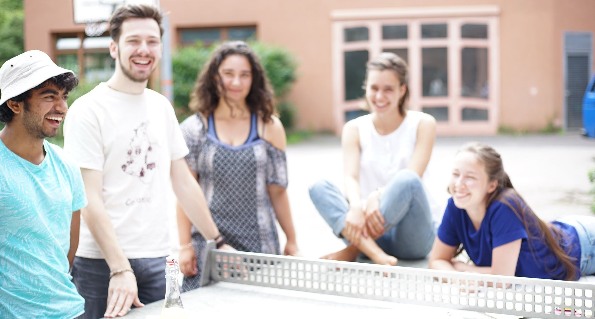
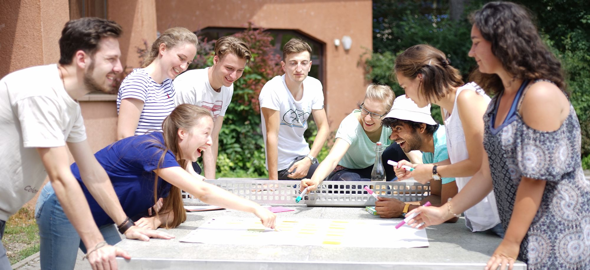

Neuigkeiten und aktuelles auf Facebook
Fortschrittsberichte auf unserem Blog auf Betterplace
Unsere interaktive Karte zeigt dir Orte in deiner Umgebung, an denen man sich schon heute für eine Welt von morgen einsetzt.
Du hast eine Initiative, für die du Mitstreiter*innen suchst?
Du kennst ein Unternehmen, das nachhaltig wirtschaftet?
Auf unserer Website kannst du andere darauf aufmerksam machen – und dich so für einen von Menschen gestalteten Ort einsetzen, der dir persönlich am Herzen liegt.
Wir sind auf der Suche nach vielfältigen Ideen, Initiativen und Unternehmen, die den aktuellen sozialen, ökologischen und ökonomischen Umbrüchen alternativ entgegen wirken. Diese möchten wir vernetzten und ihnen möchten wir einen gemeinsamen Online-Auftritt und damit eine erhöhte Aufmerksamkeit ermöglichen.
Nach dem Wiki-Prinzip können alle Nutzer*innen, Initiativen und Unternehmen sich und andere auf der Karte eintragen und so ihre Mitmenschen erreichen. Doch von morgen ist mehr als eine Onlineplattform: Regionalpilot*innen sichern vor Ort die Qualität der Karteneinträge und haben neben einer redaktionellen Funktion die Aufgabe durch Bildungsveranstaltungen und Aktionen den regionalen Austausch zwischen Bürger*innen, Initiativen und Unternehmen zu stärken.
von morgen fragt nach Werten, die unsere Gesellschaft fundieren und bewegen. Wir zeigen Menschen, die Guten tun, wo es Gutes gibt.

facebook.com/vonmorgen
info@kartevonmorgen.org
Wir wollen mit gutem Beispiel vorangehen und entwickeln daher die Software transparent und offen. Den Quellcode des Gemeinschaftsprojekts findest du unter:
github.com/flosse/kartevonmorgen
Gemeinsam mit unserem Partner, dem gemeinnützigen Verein Ideen³ e.V. und der "Ideenwerkstatt Bildungsagenten", bieten wir Workshops zu verschiedenen Themen an, um die sozial-ökologische Transformation zu unterstützen.
www.bildungsagenten.org